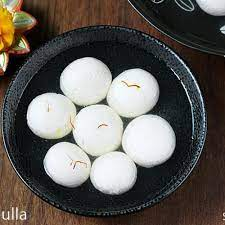

RASGULLA
Description
rasgulla is a sweet dish which is found mainly in india pakistan and bangladesh.
it is very sweet in taste. it is made of rice flour and sugar.
INGREDIENTS
- milk
- corn starch
- lemon juice
- sugar
- water
- cardmom
step to take
- first boil a liter of milk in heavy bottom utensil.
- add tablespoon of lemon juice or vinegar ,to curdles it
- add cold water to stop cooking process.
- rinse it and wrap it in a cloth and rinse properly to remove lemon flavour
- in the cloth tightly squueze it then make dow of it
- then make small small round
- add sugar to pot and then make syrup of it then dip round rasgullas on it
- then add a dkhan on it then rest in roomo temprature. your rasgula is ready to serve